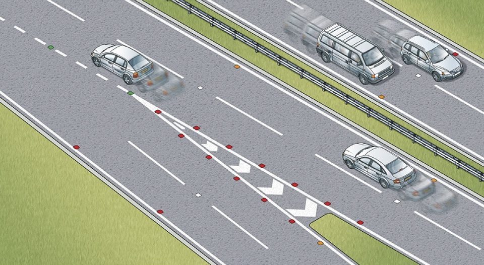

General rules, techniques and advice for all drivers and riders (103 to 158)
6. Lines and lane markings on the road (127 to 132)
Download ‘Road markings’
to see diagrams of all lines.
to see diagrams of all lines.
127
A broken white line. This marks the centre of the road. When this line lengthens and the gaps shorten, it means that there is a hazard ahead. Do not cross it unless you can see the road is clear and wish to overtake or turn off.
A broken white line. This marks the centre of the road. When this line lengthens and the gaps shorten, it means that there is a hazard ahead. Do not cross it unless you can see the road is clear and wish to overtake or turn off.
128
Double white lines where the line nearest to you is broken. This means you may cross the lines to overtake if it is safe, provided you can complete the manoeuvre before reaching a solid white line on your side. White direction arrows on the road indicate that you need to get back onto your side of the road.
Double white lines where the line nearest to you is broken. This means you may cross the lines to overtake if it is safe, provided you can complete the manoeuvre before reaching a solid white line on your side. White direction arrows on the road indicate that you need to get back onto your side of the road.
129
Double white lines where the line nearest you is solid. This means you MUST NOT cross or straddle it unless it is safe and you need to enter adjoining premises or a side road. You may cross the line if necessary, provided the road is clear, to pass a stationary vehicle, or overtake a pedal cycle, horse or road maintenance vehicle, if they are travelling at 10 mph (16 km/h) or less.
Laws RTA 1988 sect 36 & TSRGD regs 10 & 26
Double white lines where the line nearest you is solid. This means you MUST NOT cross or straddle it unless it is safe and you need to enter adjoining premises or a side road. You may cross the line if necessary, provided the road is clear, to pass a stationary vehicle, or overtake a pedal cycle, horse or road maintenance vehicle, if they are travelling at 10 mph (16 km/h) or less.
Laws RTA 1988 sect 36 & TSRGD regs 10 & 26
130
Areas of white diagonal stripes or chevrons painted on the road. These are to separate traffic lanes or to protect traffic turning right.
Areas of white diagonal stripes or chevrons painted on the road. These are to separate traffic lanes or to protect traffic turning right.
- If the area is bordered by a broken white line, you should not enter the area unless it is necessary and you can see that it is safe to do so.
- If the area is marked with chevrons and bordered by solid white lines you MUST NOT enter it except in an emergency.
131
Lane dividers. These are short, broken white lines which are used on wide carriageways to divide them into lanes. You should keep between them.
Lane dividers. These are short, broken white lines which are used on wide carriageways to divide them into lanes. You should keep between them.
132
Reflective road studs may be used with white lines.
Reflective road studs may be used with white lines.
- White studs mark the lanes or the middle of the road.
- Red studs mark the left edge of the road.
- Amber studs mark the central reservation of a dual carriageway or motorway.
- Green studs mark the edge of the main carriageway at lay-bys and slip roads.
- Green/yellow studs indicate temporary adjustments to lane layouts, e.g. where road works are taking place.

Rule 132: Reflective road studs mark the lanes and edge of the carriageway